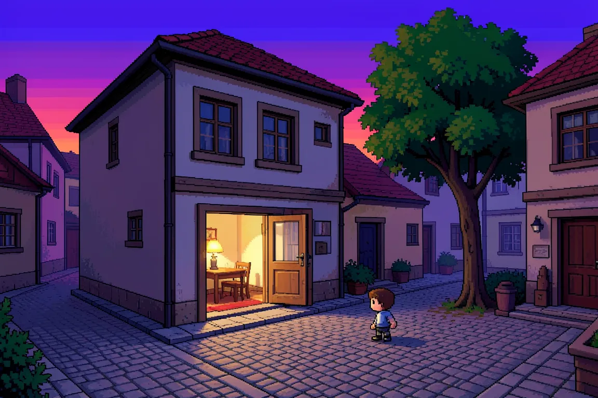

Pikselkunst i 256×224 med opptil 256 farger på skjermen fra et område på 32 768 farger. Flere rullende lag gir parallakse-dybde, sprites bærer 15 farger og myke fargerekker, og himmelen får gradienter laget av fargebånd.

Kjerneidé
En rikere palett og lag på lag lar pikselkunst male lys, luft og avstand uten en 3D-motor.
Designprinsipper
Bruk 2 til 4 bakgrunnslag som ruller i ulik fart for dybde.
Skyggelegg hver sprite med fargerekker på 3 til 5 trinn av én fargetone, belyst øverst fra venstre.
Bruk 15 farger pluss gjennomsiktig i hver sprite.
Mal himler som vannrette bånd av 4 til 8 farger, ikke en glatt gradient.
Bruk selektive konturer: mørke utenpå, farget inni.